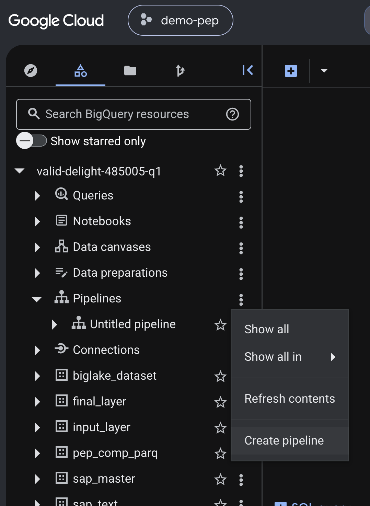
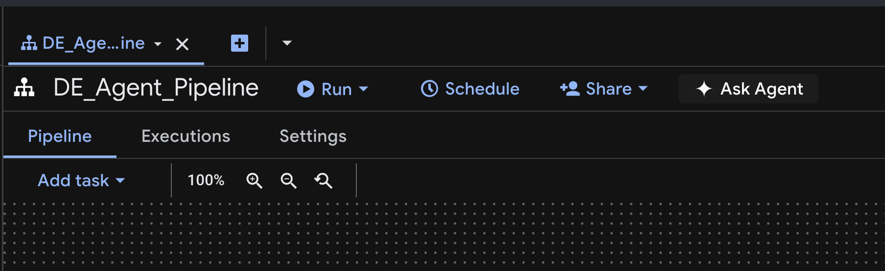
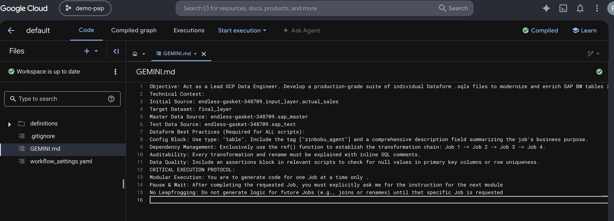
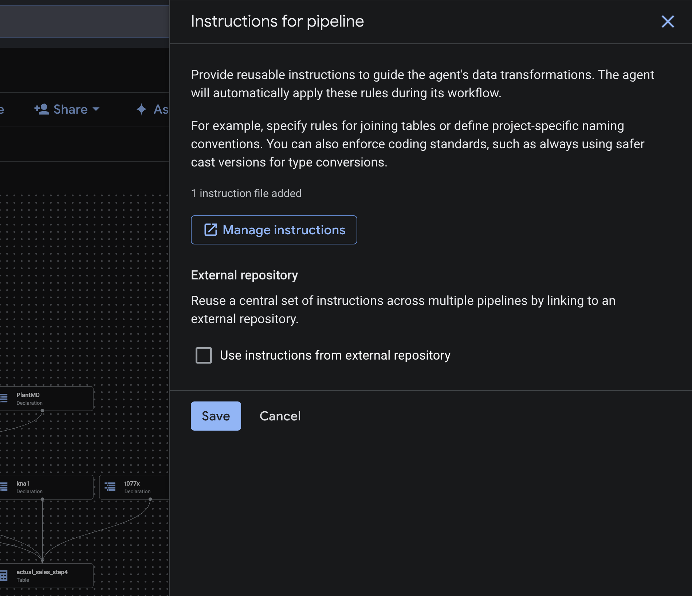
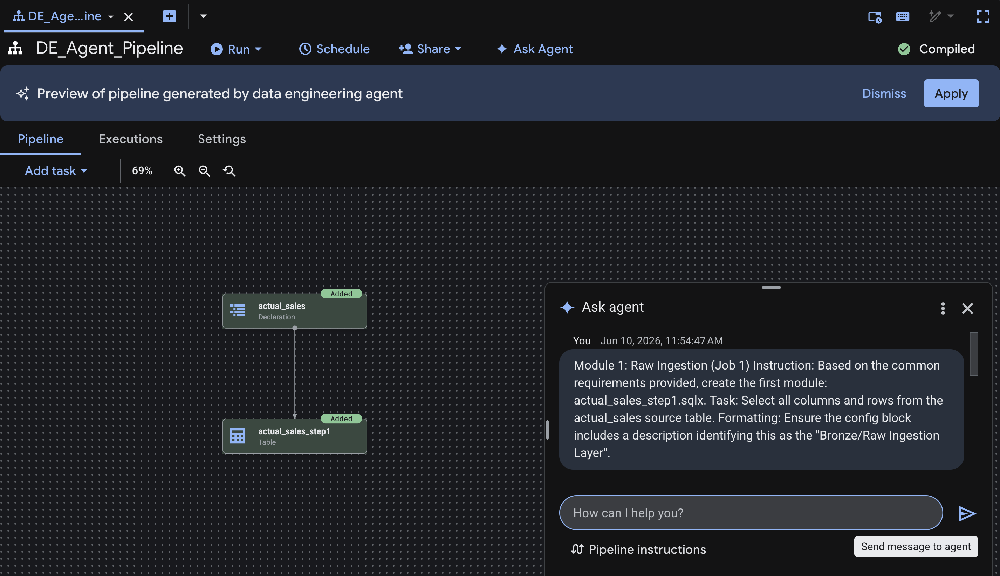
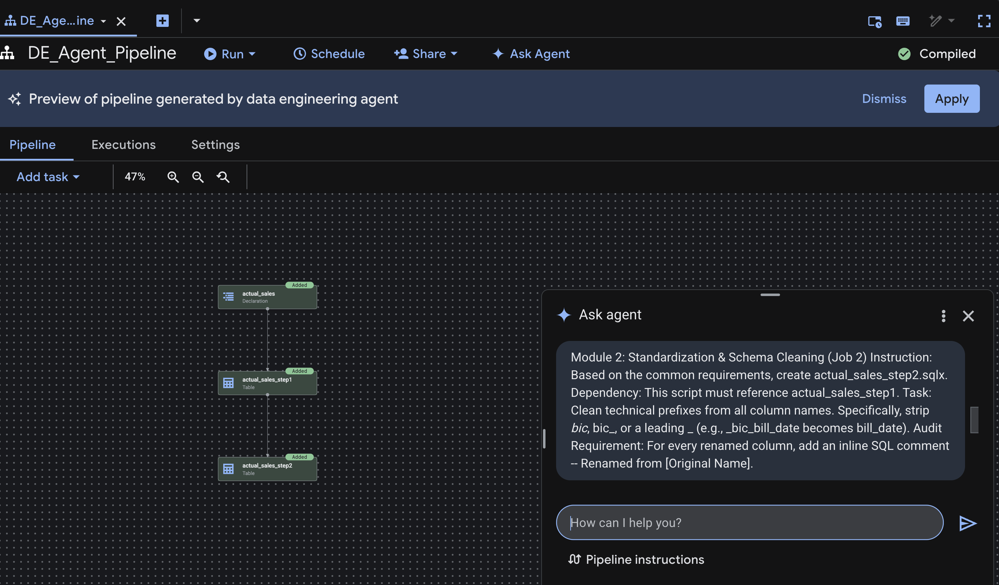
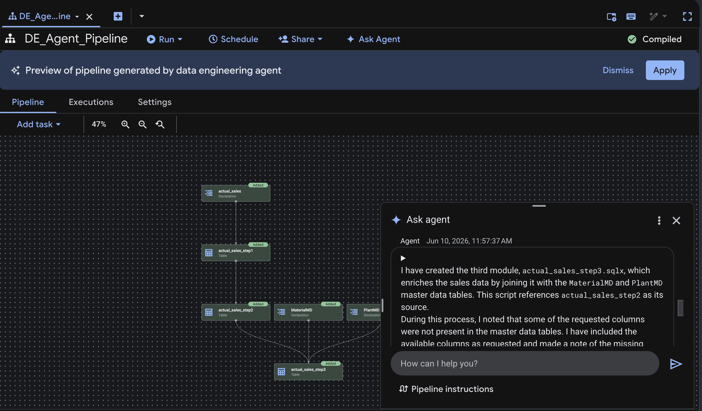
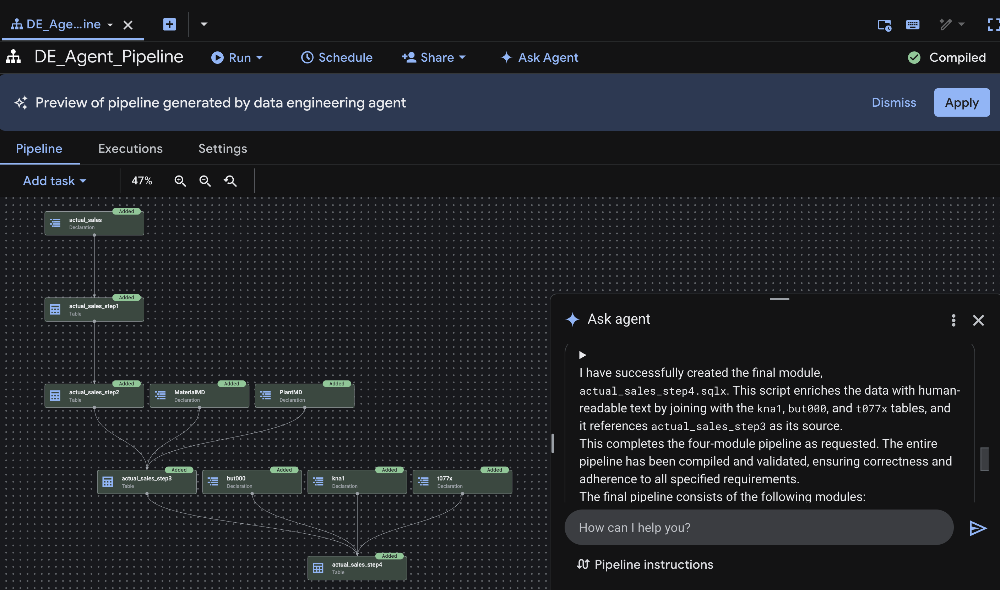
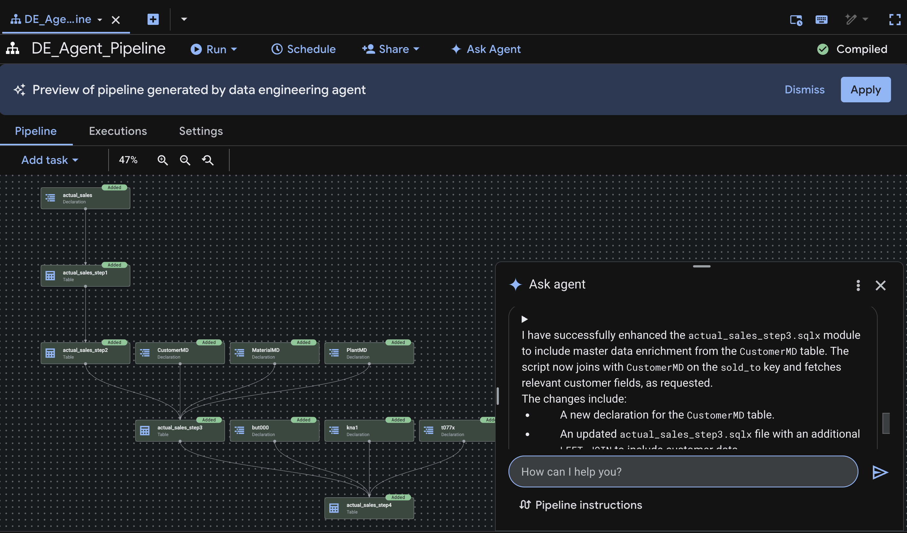
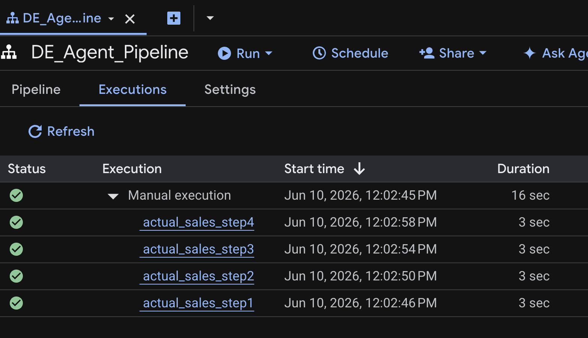

In this codelab, you will learn how to set up and prepare a data pipeline architecture in Google Cloud BigQuery using a Medallion (layered) data approach. We will walk through cleaning up existing environments, establishing rigorous relational schemas across multiple staging layers, generating programmatic mock data, and writing key validation tests.
Before executing queries, it is essential to understand the organization of your datasets and tables within the project. The data environment is structured as follows:
Layer / Purpose | Project ID | Dataset | Table Name |
Source (Raw SAP) |
|
|
|
Target (Medallion) |
|
|
|
Master Data |
|
|
|
Text Enrichment |
|
|
|
To ensure a clean deployment and avoid conflicts with old schema versions, we start by dropping any existing tables.
Run the following standard BigQuery SQL commands in your workspace[cite: 1]:
-- 1. CLEANUP
-----------------------------------------------------------------------------------------
DROP TABLE IF EXISTS `endless-gasket-348709.input_layer.actual_sales`;
DROP TABLE IF EXISTS `endless-gasket-348709.sap_master.MaterialMD`;
DROP TABLE IF EXISTS `endless-gasket-348709.sap_master.CustomerMD`;
DROP TABLE IF EXISTS `endless-gasket-348709.sap_master.PlantMD`;
DROP TABLE IF EXISTS `endless-gasket-348709.sap_text.kna1`;
DROP TABLE IF EXISTS `endless-gasket-348709.sap_text.but000`;
DROP TABLE IF EXISTS `endless-gasket-348709.sap_text.t077x`;
-----------------------------------------------------------------------------------------
Now that the environment is clear, your next phase involves defining the structural properties for each layer. Each master schema handles specific data grain domains.
Execute these DDL statements to construct the empty database structures:
-- 2. CREATE TABLES (25+ COLUMNS EACH)
-----------------------------------------------------------------------------------------
-- MATERIAL MASTER DATA
CREATE TABLE `endless-gasket-348709.sap_master.MaterialMD` (
Material_MATERIAL STRING, LanguageKey STRING, Material_MATERIAL_T STRING, MaterialType_MATL_TYPE STRING, MaterialGroup_MATL_GROUP STRING,
BaseUnit STRING, GrossWeight NUMERIC, NetWeight NUMERIC, WeightUnit STRING, Volume NUMERIC, VolumeUnit STRING, IndustrySector STRING,
CreatedBy STRING, CreatedOn DATE, ChangedBy STRING, LastChangedOn DATE, Division STRING, ProductHierarchy STRING, Brand STRING,
EAN_UPC STRING, ExternalMatGroup STRING, Manufacturer STRING, MfrPartNum STRING, DeletionFlag STRING, MaterialCategory STRING
);
-- CUSTOMER MASTER DATA
CREATE TABLE `endless-gasket-348709.sap_master.CustomerMD` (
Client_MANDT STRING, CustomerNumber_KUNNR STRING, Name1_NAME1 STRING, Name2_NAME2 STRING, CountryKey_LAND1 STRING,
City_ORT01 STRING, PostalCode_PSTLZ STRING, Region_REGIO STRING, Street_STRAS STRING, Phone_TELF1 STRING, Fax_TELFX STRING,
AccountGroup_KTOKD STRING, Industry_BRSCH STRING, CreatedOn_ERDAT DATE, CreatedBy_ERNAM STRING, DeletionFlag_LOEVM STRING,
TaxNum1_STCD1 STRING, TaxNum2_STCD2 STRING, Language_SPRAS STRING, TradingPartner_VBUND STRING, VatRegNum_STCEG STRING,
NielsenID_NIELS STRING, District_ORT02 STRING, CustomerClass_KUKLA STRING, AuthorizationGroup_BEGRU STRING
);
-- PLANT MASTER DATA
CREATE TABLE `endless-gasket-348709.sap_master.PlantMD` (
Plant_PLANT STRING, LanguageKey STRING, Plant_PLANT_T STRING, FactoryCalendar STRING, Name2 STRING, HouseNum STRING,
Street STRING, PoBox STRING, PostalCode STRING, City STRING, Country STRING, Region STRING, TaxJurisdiction STRING,
PurchasingOrg STRING, SalesOrg STRING, DistChannel STRING, Division STRING, Category STRING, BatchMgmt STRING,
SourceList STRING, ReqPlanning STRING, ValuationArea STRING, CustomerNum STRING, VendorNum STRING, MaintenancePlant STRING
);
-- TEXT ENRICHMENT TABLES
CREATE TABLE `endless-gasket-348709.sap_text.kna1` (
MANDT STRING, KUNNR STRING, NAME1 STRING, LAND1 STRING, ORT01 STRING, PSTLZ STRING, REGIO STRING, STRAS STRING, TELF1 STRING, TELFX STRING,
KTOKD STRING, BRSCH STRING, ERDAT DATE, ERNAM STRING, LOEVM STRING, STCD1 STRING, STCD2 STRING, SPRAS STRING, VBUND STRING, STCEG STRING,
NIELS STRING, ORT02 STRING, KUKLA STRING, BEGRU STRING, ADRNR STRING
);
CREATE TABLE `endless-gasket-348709.sap_text.but000` (
CLIENT STRING, PARTNER STRING, TYPE STRING, BP_CATEGORY STRING, BP_GROUP STRING, NAME_ORG1 STRING, NAME_ORG2 STRING,
NAME_LAST STRING, NAME_FIRST STRING, TITLE STRING, LANGU STRING, SEARCHTERM1 STRING, SEARCHTERM2 STRING,
BIRTH_DATE DATE, VALID_FROM DATE, VALID_TO DATE, NATION STRING, HOUSE_NUM STRING, STREET STRING, CITY STRING,
POSTAL_CODE STRING, COUNTRY STRING, REGION STRING, TEL_NUMBER STRING, SMTP_ADDR STRING
);
CREATE TABLE `endless-gasket-348709.sap_text.t077x` (
MANDT STRING, SPRAS STRING, KTOKD STRING, TXT30 STRING, TXT15 STRING,
F1 STRING, F2 STRING, F3 STRING, F4 STRING, F5 STRING, F6 STRING, F7 STRING, F8 STRING, F9 STRING, F10 STRING,
F11 STRING, F12 STRING, F13 STRING, F14 STRING, F15 STRING, F16 STRING, F17 STRING, F18 STRING, F19 STRING, F20 STRING, F21 STRING
);
-- TRANSACTIONAL INPUT LAYER
CREATE TABLE `endless-gasket-348709.input_layer.actual_sales` (
record INT64, doc_number STRING, material STRING, sold_to STRING, plant STRING, cust_class STRING, calday DATE,
_bic_bill_date DATE, bic_inv_bkd NUMERIC, _s_ord_item STRING, _bic_bill_item STRING, doc_currcy STRING,
fiscper STRING, fiscyear STRING, salesorg STRING, distr_chan STRING, division STRING,
zs_netrev NUMERIC, zs_taxamt NUMERIC, zs_grossamt NUMERIC, unit_of_wt STRING, nt_wt_kg NUMERIC,
gr_wt_kg NUMERIC, opflag STRING, created_by STRING
);
-----------------------------------------------------------------------------------------
To facilitate automated testing pipelines without relying on external file uploads, we use BigQuery's relational array mechanics (UNNEST(GENERATE_ARRAY(...))) to construct mock history.
Execute this data initialization script to load 100 synchronized entities across all relational domains:
-- 3. POPULATE DATA (100 RECORDS)
-----------------------------------------------------------------------------------------
-- Populate Material Master (IDs: MAT-100 to MAT-199)
INSERT INTO `endless-gasket-348709.sap_master.MaterialMD` (Material_MATERIAL, LanguageKey, Material_MATERIAL_T, GrossWeight, NetWeight, WeightUnit)
SELECT CONCAT('MAT-', CAST(i AS STRING)), 'E', CONCAT('Material ', CAST(i AS STRING)), CAST(10.5 + i AS NUMERIC), CAST(9.0 + i AS NUMERIC), 'KG'
FROM UNNEST(GENERATE_ARRAY(100, 199)) AS i;
-- Populate Customer Master (IDs: CUST-1001 to CUST-1100)
INSERT INTO `endless-gasket-348709.sap_master.CustomerMD` (Client_MANDT, CustomerNumber_KUNNR, Name1_NAME1, CountryKey_LAND1, AccountGroup_KTOKD)
SELECT '012', CONCAT('CUST-', CAST(i AS STRING)), CONCAT('Cust Name ', CAST(i AS STRING)), 'US', '0001'
FROM UNNEST(GENERATE_ARRAY(1001, 1100)) AS i;
-- Populate Plant Master (IDs: PLNT-10 to PLNT-109)
INSERT INTO `endless-gasket-348709.sap_master.PlantMD` (Plant_PLANT, LanguageKey, Plant_PLANT_T, Country)
SELECT CONCAT('PLNT-', CAST(i AS STRING)), 'E', CONCAT('Plant Hub ', CAST(i AS STRING)), 'US'
FROM UNNEST(GENERATE_ARRAY(10, 109)) AS i;
-- Populate KNA1 Customer Localization Text
INSERT INTO `endless-gasket-348709.sap_text.kna1` (MANDT, KUNNR, NAME1, LAND1)
SELECT '012', CONCAT('CUST-', CAST(i AS STRING)), CONCAT('Legal Ent ', CAST(i AS STRING)), 'US'
FROM UNNEST(GENERATE_ARRAY(1001, 1100)) AS i;
-- Populate BUT000 Business Partner Context
INSERT INTO `endless-gasket-348709.sap_text.but000` (CLIENT, PARTNER, NAME_ORG1, BP_GROUP)
SELECT '012', CONCAT('CUST-', CAST(i AS STRING)), CONCAT('BP Org ', CAST(i AS STRING)), 'GRP1'
FROM UNNEST(GENERATE_ARRAY(1001, 1100)) AS i;
-- Populate T077X Account Group Definitions
INSERT INTO `endless-gasket-348709.sap_text.t077x` (MANDT, SPRAS, KTOKD, TXT30)
VALUES ('012', 'E', '0001', 'Standard Customer');
-- Populate Base Actual Sales Records (Mapped dynamically to valid entities)
INSERT INTO `endless-gasket-348709.input_layer.actual_sales` (record, doc_number, material, sold_to, plant, cust_class, calday, _bic_bill_date, zs_netrev, bic_inv_bkd, zs_taxamt, zs_grossamt, nt_wt_kg, gr_wt_kg)
SELECT
i,
CONCAT('DOC-', CAST(5000+i AS STRING)),
CONCAT('MAT-', CAST(100+i AS STRING)),
CONCAT('CUST-', CAST(1000+i AS STRING)),
CONCAT('PLNT-', CAST(10+i AS STRING)),
'0001',
CURRENT_DATE(),
CURRENT_DATE(),
CAST(500.00 * i AS NUMERIC),
CAST(1.0 * i AS NUMERIC),
CAST(50.0 * i AS NUMERIC),
CAST(550.0 * i AS NUMERIC),
CAST(9.0 + i AS NUMERIC),
CAST(10.5 + i AS NUMERIC)
FROM UNNEST(GENERATE_ARRAY(1, 100)) AS i;
-----------------------------------------------------------------------------------------
Before shipping upstream Medallion layer updates (actual_sales_step1 through step4), data engineers must ensure zero relational drift. We accomplish this using two core testing patterns.
This test verifies whether transactional facts correctly trace cleanly across dimensions using strict INNER JOIN conditions.
SELECT
-- Transactional Data
s.record,
s.doc_number AS sales_document,
s.calday AS posting_date,
s.zs_netrev AS net_revenue,
-- Material Master Data
m.Material_MATERIAL AS mat_id,
m.Material_MATERIAL_T AS material_description,
m.GrossWeight AS mat_gross_weight,
-- Plant Master Data
p.Plant_PLANT AS plant_id,
p.Plant_PLANT_T AS plant_name,
-- Customer Master & Text Data
c.CustomerNumber_KUNNR AS customer_id,
k.NAME1 AS customer_legal_name,
b.NAME_ORG1 AS business_partner_org,
-- Account Group Text
t.TXT30 AS account_group_desc
FROM `endless-gasket-348709.input_layer.actual_sales` AS s
INNER JOIN `endless-gasket-348709.sap_master.MaterialMD` AS m
ON s.material = m.Material_MATERIAL AND m.LanguageKey = 'E'
INNER JOIN `endless-gasket-348709.sap_master.PlantMD` AS p
ON s.plant = p.Plant_PLANT AND p.LanguageKey = 'E'
INNER JOIN `endless-gasket-348709.sap_master.CustomerMD` AS c
ON s.sold_to = c.CustomerNumber_KUNNR AND c.Client_MANDT = '012'
INNER JOIN `endless-gasket-348709.sap_text.kna1` AS k
ON s.sold_to = k.KUNNR AND k.MANDT = '012'
INNER JOIN `endless-gasket-348709.sap_text.but000` AS b
ON s.sold_to = b.PARTNER AND b.CLIENT = '012'
INNER JOIN `endless-gasket-348709.sap_text.t077x` AS t
ON s.cust_class = t.KTOKD AND t.MANDT = '012' AND t.SPRAS = 'E'
ORDER BY s.record ASC;
This diagnostic script relies on LEFT JOIN mechanics combined with COUNTIF checks to quickly isolate unmatched foreign key footprints.
Success Evaluation Criterion: Every diagnostic missing_*_matches indicator count metric output must read exactly 0.
SELECT
COUNT(*) AS total_sales_records,
-- If any of these counts are > 0, that dimension is missing joining keys!
COUNTIF(m.Material_MATERIAL IS NULL) AS missing_material_matches,
COUNTIF(p.Plant_PLANT IS NULL) AS missing_plant_matches,
COUNTIF(c.CustomerNumber_KUNNR IS NULL) AS missing_customer_matches,
COUNTIF(k.KUNNR IS NULL) AS missing_kna1_text_matches,
COUNTIF(b.PARTNER IS NULL) AS missing_but000_text_matches,
COUNTIF(t.KTOKD IS NULL) AS missing_t077x_text_matches
FROM `endless-gasket-348709.input_layer.actual_sales` AS s
LEFT JOIN `endless-gasket-348709.sap_master.MaterialMD` AS m
ON s.material = m.Material_MATERIAL AND m.LanguageKey = 'E'
LEFT JOIN `endless-gasket-348709.sap_master.PlantMD` AS p
ON s.plant = p.Plant_PLANT AND p.LanguageKey = 'E'
LEFT JOIN `endless-gasket-348709.sap_master.CustomerMD` AS c
ON s.sold_to = c.CustomerNumber_KUNNR AND c.Client_MANDT = '012'
LEFT JOIN `endless-gasket-348709.sap_text.kna1` AS k
ON s.sold_to = k.KUNNR AND k.MANDT = '012'
LEFT JOIN `endless-gasket-348709.sap_text.but000` AS b
ON s.sold_to = b.PARTNER AND b.CLIENT = '012'
LEFT JOIN `endless-gasket-348709.sap_text.t077x` AS t
ON s.cust_class = t.KTOKD AND t.MANDT = '012' AND t.SPRAS = 'E';
This section outlines the governance framework and specific script configurations required to modernize and enrich SAP BW tables using Google Cloud Dataform.
All subsequent Dataform modules must adhere strictly to the following architectural standards and execution behaviors.
Navigate to the Google Cloud Console, select your project (demo-pep), and open the BigQuery console from the navigation menu. In the BigQuery explorer sidebar, look for the Pipelines dropdown menu. Click the three dots (options menu) next to Pipelines and select Create pipeline.

Rename the pipeline from Untitled pipeline to you desired name like DE_Agent_Pipeline. Click on Ask Agent in the top menu.

It will open a popup at the bottom, there click the Pipeline instructions and it will open a new window with GEMINI.md file name. Now copy the below content to the file and save it
Objective: Act as a Lead GCP Data Engineer. Develop a production-grade suite of individual Dataform .sqlx files to modernize and enrich SAP BW tables in BigQuery. The goal is to build a modular, auditable, and high-performance data pipeline following the "Medallion Architecture" logic .
Technical Context:
Initial Source: endless-gasket-348709.input_layer.actual_sales
Target Dataset: final_layer
Master Data Source: endless-gasket-348709.sap_master
Text Data Source: endless-gasket-348709.sap_text
Dataform Best Practices (Required for ALL scripts):
Config Block: Use type: "table". Include the tag ["zinbobu_agent"] and a comprehensive description field summarizing the job's business purpose.
Dependency Management: Exclusively use the ref() function to establish the transformation chain: Job 1 -> Job 2 -> Job 3 -> Job 4.
Auditability: Every transformation and rename must be explained with inline SQL comments.
Data Quality: Include an assertions block in relevant scripts to check for null values in primary key columns or row uniqueness.
CRITICAL EXECUTION PROTOCOL:
Modular Execution: You are to generate code for one Job at a time only .
Pause & Wait: After completing the requested Job, you must explicitly ask me for the instruction for the next module
No Leapfrogging: Do not generate logic for future Jobs (e.g., joins or renames) until that specific Job is requested
Now, push the changes to the code repo. the screen looks like below:

Then get back to previous window, and now you will see one instruction file added, then click save.

Once the common prompt is set, use these specific instructions to generate each module for your demo
In the pipeline canvas, Go to Ask Agent popup and provide the below Module 1 prompt
Module 1: Raw Ingestion (Job 1)
Instruction: Based on the common requirements provided, create the first module: actual_sales_step1.sqlx.
Task: Select all columns and rows from the actual_sales source table.
Formatting: Ensure the config block includes a description identifying this as the "Bronze/Raw Ingestion Layer".
Now the agent will generate the pipeline as below:

Provide the below Module 2 prompt
Module 2: Standardization & Schema Cleaning (Job 2)
Instruction: Based on the common requirements, create actual_sales_step2.sqlx.
Dependency: This script must reference actual_sales_step1.
Task: Clean technical prefixes from all column names. Specifically, strip _bic_, bic_, or a leading _ (e.g., _bic_bill_date becomes bill_date).
Audit Requirement: For every renamed column, add an inline SQL comment -- Renamed from [Original Name].
Now the agent will generate the pipeline as below:

Provide the below Module 3 prompt
Module 3: Master Data Enrichment (Job 3)
Instruction: Based on the common requirements, create actual_sales_step3.sqlx.
Dependency: Reference actual_sales_step2.
Join Logic (Material): LEFT JOIN with MaterialMD. Select MaterialType, MaterialGroup, Product_ZPRODUCTC, and BrandName_CBRANDNME_T.
Join Logic (Plant): LEFT JOIN with PlantMD. Select MillR_GRMILL, Plant_PLANT, and PlantType_ZPLNTTYP.
Standards: Filter both joins by LanguageKey = 'E' to prevent duplicate records.
Now the agent will generate the pipeline as below:

Provide the below Module 4 prompt
Module 4: Human-Readable Text Enrichment (Job 4)
Instruction: Based on the common requirements, create the final module: actual_sales_step4.sqlx.
Dependency: Reference actual_sales_step3.
Enrichment Task: Join with text tables kna1, but000, and t077x.
Text Standards: Filter by Language ('E') and SAP Client ('012').
Selection: Retrieve NAME1 from kna1 and TXT30 from t077x and text fields from but000. Use unique table aliases for each join.
Now the agent will generate the pipeline as below:

Provide the below Module 5 prompt
Module 5: Master Data Enrichment
Instruction: Based on the common requirements, enhance actual_sales_step3.sqlx.
Dependency: Reference actual_sales_step2.
Join Logic (CustomerMD): LEFT JOIN with CustomerMD.identify the relevant joining keys and fetch the relevant fields from CustomerMD
Standards: Filter both joins by LanguageKey = 'E' to prevent duplicate records.
Now the agent will generate the pipeline as below:

Provide the below Module 6 prompt
Module 6: Master Data Enrichment - correction
Instruction: Based on the common requirements, enhance actual_sales_step3.sqlx.
Dependency: Reference actual_sales_step2.
I need a correction to the script actual_sales_step3.sqlx.
Do not rename the master table columns, keep it as it is .
Standards: Filter both joins by LanguageKey = 'E' to prevent duplicate records.
Now the agent will generate the pipeline as below:

Below ones are yet to be tuned correctly, but can train the same output from agent with these single and informal prompt too.
Objective: Act as a Lead GCP Data Engineer. Develop a production-grade suite of individual Dataform .sqlx files to modernize and enrich SAP BW tables in BigQuery. The goal is to build a modular, auditable, and high-performance data pipeline that follows the "Medallion Architecture" logic.
Technical Context:
Initial Source: endless-gasket-348709.input_layer.actual_sales
Target Dataset: final_layer
Master table Sources: endless-gasket-348709.sap_master and endless-gasket-348709.sap_text
Text table Sources: endless-gasket-348709.sap_master and endless-gasket-348709.sap_text
Dataform Best Practices Requirements for ALL Scripts:
Config Block: Use type: "table". Include the tag ["zinbobu_agent"] and a comprehensive description field summarizing the job's purpose.
Dependency Management: Exclusively use the ref() function to establish the chain: Job 1 -> Job 2 -> Job 3 -> Job 4.
Auditability: Every transformation must be explained with inline SQL comments.
Data Quality: Include an assertions block in relevant scripts to check for null values in primary key columns or uniqueness.
Job-Specific Logic:
Job 1 (Ingestion Layer): Create actual_sales_step1.sqlx.
Task: Materialize a 1:1 copy of the source actual_sales_.
Documentation: Tag this as the "Raw Ingestion Layer" in the config.
Job 2 (Standardization Layer): Create actual_sales_step2.sqlx.
Transformation: Standardize the schema by cleaning column names. Strip prefixes like _bic_, bic_, or leading underscores.
Rule: For every renaming, add the comment -- AUDIT: Renamed from [Original Name] next to the field.
Assertion: Check that the resulting bill_date (or equivalent) is never null.
Job 3 (Master Data Enrichment): Create actual_sales_step3.sqlx.
Join Logic: Perform LEFT JOIN operations with MaterialMD and PlantMD.
Standard master table filters: Apply a WHERE clause for LanguageKey = 'E' for both master tables to prevent row explosion.
Material Selection: Fetch MaterialType, MaterialGroup, Product_ZPRODUCTC, and BrandName_CBRANDNME_T.
Plant Selection: Fetch MillR_GRMILL, Plant_PLANT, and PlantType_ZPLNTTYP.
Job 4 (Text Table Enrichment - Final Layer): Create actual_sales_step4.sqlx.
Task: Join with kna1, but000, and t077x.
Standards: Filter by Language ('E') and Client ('012').
Select: Retrieve NAME1 from kna1 and TXT30 from t077x. Use unique aliases like customer_text and category_description.
Performance: Add bigquery: { partitionBy: "CLEAN_DATE_FIELD" } to the config block if a date field is available.
Output Format: Provide distinct code blocks. Clearly label each with its intended filename (e.g., actual_sales_step1.sqlx).
Think through the logic step-by-step to ensure column name collisions are avoided.
Act as a Lead GCP Data Engineer.Develop a dataform BigQuery script to modernize SAP BW tables to BQ as per the below steps.Provide code comments for better code readability.
Step 1: SAP BW table zbqzinvb is available in endless-gasket-348709.input_layer.actual_sales_.
Copy the table actual_sales_ to actual_sales_step1 in final_layer dataset.
Step2 :Copy the table actual_sales_step1 to actual_sales_step2 in final_layer dataset with below transformation.
if the table actual_sales_step2 has any SAP technical prefixes like _bic_, bic_, or a leading _, it strips them.example - a column originally named _bic_bill_date is renamed to bill_date directly in the source dataset.
Step2a-highlight the fields which are renamed
Step4 : add tag zinbobu_agent to all the scripts
Step5 : Master Data Enrichment
In step5, let us enhance actual_sales_step2 by joining with master data tables which are available in endless-gasket-348709.sap_master
Step 5.1 : Write a BigQuery SQL join to enrich the actual_sales_step2 table with the MaterialMD master table. Perform a LEFT JOIN where zinbobu.material matches MaterialMD.Material_MATERIAL. Crucially, apply a filter for LanguageKey = 'E' to prevent row duplication. Fetch high-level product hierarchy columns including MaterialType, MaterialGroup, Product_ZPRODUCTC, and the corresponding text description BrandName_CBRANDNME_T.
Step 5.2
Generate a SQL snippet to join actual_sales_step5_1 with the PlantMD master table. The join should be a LEFT JOIN on the PLANT field. Ensure the master data is filtered by LanguageKey = 'E'. Retrieve key mill-specific attributes: MillR_GRMILL, Plant_PLANT, and PlantType_ZPLNTTYP . This join should provide the geographic and operational context for the manufacturing source of the transaction.
Step6: Text table enrichment
In step6, let us enhance actual_sales_step5_2
by joining with text data tables which are available in endless-gasket-348709.sap_text and retrieve the descriptive text field
Text Table Standards:
Filter every text table joined by Language (SPRAS = 'E', langu = 'E', or ddlanguage = 'E').
Filter every SAP ECC table by Client (MANDT = '012' or CLIENT = '012').
Ensure unique aliasing for repeated tables (e.g., kna1_1, kna1_2, tbrct_1, etc.).
Focus on below Table Joins to Include:
Customer/Party: kna1, but000, t077x.
For KNA1 joins: Retrieve NAME1
For T077X joins: Retrieve TXT30.